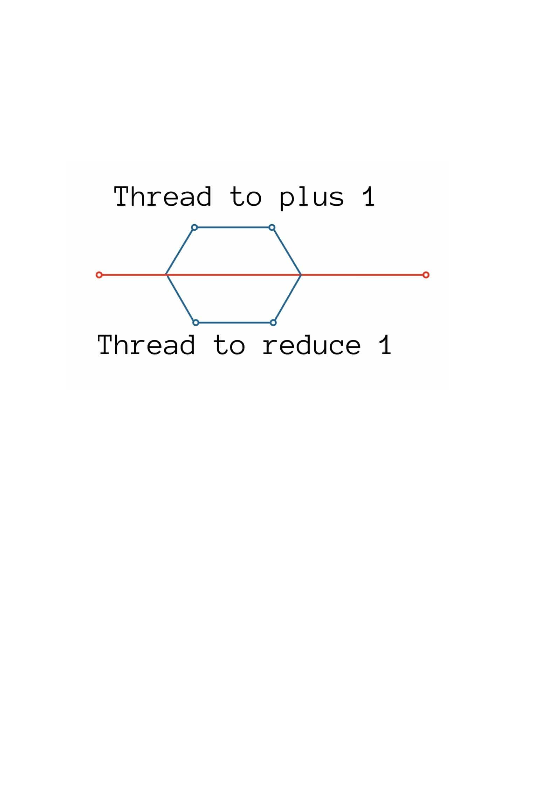

Have you ever felt like your code was excruciatingly slow? It may be a very simple task, but due to the sheer number of repetitions, your code takes forever to complete. This is a very common issue! Lucky for us, there’s one way to overcome this problem - Threading! Threading allows us to produce code that can run “on multiple dimensions”, which speeds up the completion time of our code drastically.
In today’s article, I hope to share the concept of Threading, and how we can use it in our Python scripts. In addition, I will also talk about how Threading is used and when it is ideal to use Threading, and when it should be avoided! I’ve been teasing this article in some of my previous articles for quite some time now, so let’s jump right in!
Concept of Threading
What is Threading? In programming, a thread is a single sequential flow of control within a program (quoted from The Java Tutorial). So if you were to run any of your Python scripts now, you are running one thread. Things start to get exciting when we consider using multiple threads in the same script! That’s basically like running instances of your script at the same time!
Each thread represents a separate instance of your code.
This is extremely efficient because the same script that took hours or days to complete, now takes minutes with Threading! With the right number of Threads, your script’s workload can be split evenly, thus making it extremely time-efficient. One very “real-world” example I like to use is Web Scraping.
Imagine you need to write a script that scrapes 100 pages from a certain website, and each page takes on average 1 second to scrape. If I were to write a script that scrapes the website page by page, it would take me an average of 100 seconds to complete (that’s slow!). However, if I were to write a script that launches 10 threads, with each thread scraping 10 pages (so thread 1 would scrape page 1 - 10, thread 2 scrapes page 11 - 20 …), It would only take 10 seconds for my script to complete! That’s the power of Threading!
It’s pretty amazing, isn’t it? Threading allows us to split up our tasks and run them concurrently, making full use of our computers’ processing power. As you may know, running multiple threads of code concurrently is not a very standard thing, especially in Python. This is largely due to Python’s Global Interpreter Lock (GIL).
GIL
The Python Global Interpreter Lock (GIL) is a system built by the developers of Python to solve memory issues. The problem was that with multiple threads, it was easy to mix up control of the same variable. With multiple threads running at the same time, there was no governing which thread could change, or even delete, shared variables.
Now imagine we have 2 threads, thread 1 adds one to a variable named “count”, and thread 2 reduces one to the same “count” variable. As both threads are launched at the same time, with “count” having an initial value of 0, thread 1 will access it (as 0), add one to it, and return it to the main thread (as 1). At the same time, thread 2 will also access “count” (as 0), reduce one from it, and return it to the main thread (as -1). What happens now? Is “count” -1 or 1?

Without proper management, threading can get messy.
See the glaring problem now? Without proper thread management, your code can very quickly barrel into tons of bugs or even crash entirely. This is why Python has the GIL. The GIL ensures that at every one point of time, there can only be one thread that garners control.
It’s like a hall pass! Whichever thread has the hall pass at one point of time, only that thread can continue. This helps simplify any lapses in variable memory, though it of course ruins the possibility of Threading. So in actual fact, Python’s Threading module isn’t actually launching multiple threads, but simply imitating multi-threading. However, at this stage it’s alright to just envision it as multi-threading.
Whichever thread has the GIL, it has the "hallpass"!
With multiple threads, things aren’t as linear as before. We must be very conscious with which thread can get control over certain variables, and when they can pass on that control to other threads. In Python’s Threading module, this is resolved with Race Conditions, but I will not cover this concept in today’s article.
Dos and Don’ts
I’ve painted a pretty picturesque idea of Threading thus far, however it isn’t a defectless system. Implementing Threading does not work for every script, and just because you implemented Threading does not mean your script will automatically be faster or more efficient. Due to the nature of Threading and the GIL, there are some limitations when it comes to Threading in Python.
The concept of Threading is simply to use the most out of your CPU’s processing power. This works exceptionally when trying to launch separate threads that all work on tasks that require low processing power. With each thread using a small amount of processing power, they all can work smoothly and efficiently. However, when trying to work on tasks that consume a large amount of processing power, threading may not be the best solution. If your script already uses up all processing power of your CPU, threading is redundant.

The applicability of Threading still boils down to the processing power of your CPU.
This is why Threading is ideal for simple tasks that require a lot of waiting, like Web Scraping! In Web Scraping, the majority of time taken is used to load the webpage we are scraping. This involves a lot of waiting around and very little processing speed, thus Threading is ideal. With each thread taking a minimum amount of processing power loading webpages, they all can work relatively smoothly to increase the efficiency of your overall script.
A general rule of thumb is that each of your thread’s tasks should be relatively lightweight. This helps keep things running smoothly and ensures that the implementation of Threading will decrease the runtime of your code.
Threading can also be used if you have multiple distinct tasks that your script has to go through. Each thread can be responsible for a single task. This requires breaking up the flow of your script a little, but can also be a lot more efficient. For example, you can manage one thread to collect data, one thread to clean data and finally another thread to send data to the database.
How to use Threading
Lucky for us, Python actually has a built-in “threading” module for us to implement Threading! This module helps us to launch and kill threads smoothly, while also managing many other things related to Threading.
To demonstrate the use of threading, let’s imagine we are building the Web Scraping script that we talked about earlier (scraping 100 pages from a website with each page taking 10 seconds).
Without the use of Threading, our code may look something like this:
#Without Threading:
for page_number in range(100):
time.sleep(1)
print(“Scraped page “ + page_number)
#The time needed for the script to complete will be about 100 seconds to complete!
This looks really slow and inefficient. Let's instead use Threading to speed up our code!
Let’s first build a dummy scrape() method:
import time
def scrape(thread_number):
print(“Scraping pages “ + str(thread_number + 1) + “ to “ + str(thread_number + 10))
for page_number in range(start_page, end_page + 1):
time.sleep(1)
print(“Scraped page “ + page_number)
return
This method simply imitates scraping pages, with each page taking 10 seconds!
Moving on, let's finally launch some threads!
import concurrent.futures
import threading
with concurrent.futures.ThreadPoolExecutor(max_workers=10) as executor:
executor.map(scrape, range(10))
That’s a lot of new code, let me explain.
The ThreadPoolExecutor object very neatly helps us to launch our threads. In our case, we hope to launch 10 threads, thus we input 10 as our parameter for “max_workers”. We also have to input what function our threads will carry out, which comes in when passing our “scrape” method as an argument in executor.map(). The second argument (range(10)) is used to pass as parameters into our scrape functions. In this case, we will pass in numbers 0, 1, 2, …, 9 into our 10 scrape threads.
Now if we run this, you will probably see a bombardment of lines in your console. That just shows that each of your threads are working well, which is really great! Isn’t it so much faster?
Just by implementing Threading, we were able to cut our script’s completion time by about 10 times! I hope this imaginary web scraping example helped to showcase the power of Threading.
Conclusion
When I was first introduced to Threading, I was pretty amazed. Especially because I was deep into data collection, Threading just seemed like the perfect step-up for my code! However, it’s vital that you learn exactly when to implement Threading, and when Threading is more of a worry.
If possible, I urge everyone to try implementing Threading to your existing scripts! Think of ways to cut down the completion time of your script as much as you can. Doing this will help you look at things in a different light while undoubtedly improving your skills as a programmer. I truly think that Threading is something every programmer has to understand and implement. If you enjoyed the article, please subscribe to our email newsletter! Stay cool, cucumbers!